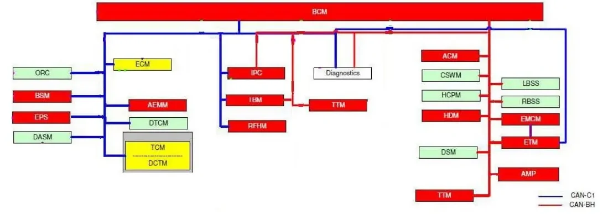
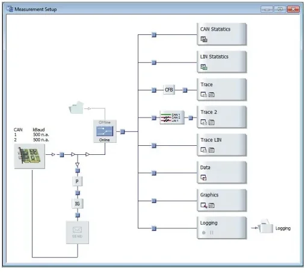
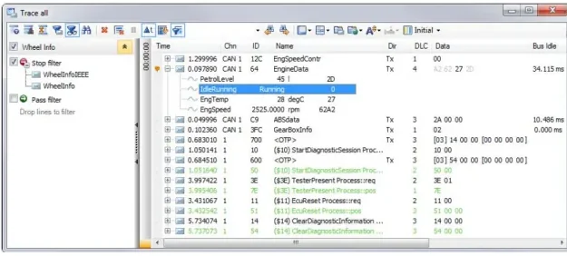

CANalyzer — CAN Bus Analysis¶
CANalyzer is Vector's tool for observing, logging and stimulating bus communication — CAN in the first place, but also LIN and FlexRay. Where the MIL1 lessons taught you what happens on the wire, CANalyzer is how you actually see it: you connect it to a real bus (or feed it a recorded trace), and it answers the fundamental question of every debugging session — is there communication on this bus, and what is it saying?
Its three big use cases:
- Analysis — watch messages and signals live, with decoded physical values, statistics and graphical plots.
- Logging & replay — record bus traffic to a file and play it back later for offline analysis.
- Stimulation — send messages yourself (manually, periodically, or from scripts) to see how ECUs react.
Before the tool: the buses you will connect to¶
CANalyzer is only as useful as your understanding of what you are probing. A quick recap of what you will find in a vehicle (full theory in CAN, LIN & Automotive Ethernet):
| Bus | Bit rate | Typical content |
|---|---|---|
| C-CAN | 500 kbit/s | Powertrain and emission-relevant ECUs (mandated by EOBD rules) |
| BH-CAN | 125 kbit/s | Body-high / multimedia ECUs |
| B-CAN | 50 kbit/s | Body and comfort functions |
| CAN FD | 1 Mbit/s arbitration, faster data phase | High-bandwidth ECUs |
A real vehicle carries several of these buses at once, with the body control module (BCM) often acting as the hub between them:

CAN is a broadcast bus — every node sees every frame — which is exactly why a passive observer like CANalyzer works so well: tap the bus anywhere and you see everything that flows on it.
Physical access: where to plug in¶
The EOBD / OBD-II diagnostic socket¶
The standard entry point is the diagnostic socket (EOBD connector), usually mounted on the driver's side between the door and the steering column:
| Pins | Assignment |
|---|---|
| 6, 14 | EOBD CAN (CAN-H / CAN-L of the diagnostic bus) |
| 4, 5 | Ground |
| 16 | Battery +12 V |
| others | Vendor-specific |
The CAN interface hardware (e.g. a Vector CANcardXL or a VN16xx interface) connects the socket to your PC over USB and presents the bus to CANalyzer as an online data source.
Wiring documents: when you tap the bus directly¶
At the bench or on a prototype you often connect straight to an ECU connector instead of the OBD socket. To do that safely you need the ECU's wiring document — the pin-out table that tells you which pin carries which signal. The lesson includes the wiring document of an instrument panel cluster (IPC) as an example: an 18-pin connector where each pin is marked used or not used and the used ones are mapped to functions such as:
- KL31 — ground,
- KL30 — permanent battery positive,
- KL15 — ignition-switched positive,
- LIN, BH-CAN L/H, C-CAN L/H — the communication buses,
- dedicated inputs (e.g. the EVIC push button).
Read the pin-out before you probe
KL-numbers are German automotive conventions (Klemme = terminal): KL30 is always-on battery, KL15 is live only with ignition on, KL31 is ground. Connecting your interface to the wrong pin can feed 12 V into a CAN transceiver input. Always confirm CAN-H/CAN-L and ground from the wiring document first, and remember the bus needs its 120 Ω termination at both ends to be readable — a bare ECU on the bench without termination will show garbage or nothing at all.
Configuring a measurement: the Measurement Setup¶
Everything in CANalyzer revolves around the Measurement Setup window, where the data flow is drawn and edited graphically — from the data source on the left to the analysis windows on the right.

flowchart LR
subgraph Source
BUS["Real bus<br/>(CAN hardware)"]
FILE["Log file<br/>(offline / replay)"]
end
BUS --> F["Filters<br/>(pass / block)"]
FILE --> F
F --> P["CAPL program nodes<br/>(compute, transform)"]
P --> IG["Interactive<br/>Generator"]
IG --> BUS
P --> W["Analysis windows<br/>Trace · Graphics · Data · Statistics"]
P --> LOG["Logging block<br/>→ log file"]The building blocks you insert into the data flow:
- Data source (online/offline). The real bus connected via the interface hardware is the online source; a previously recorded log file is the offline source. You can replay an offline file through the exact same analysis setup as a live bus.
- Analysis windows. Trace, Graphics, Data, Statistics (details below) — each window can show the same data in a different way.
- CAPL program nodes. Small programs inserted into the data flow for filtering, arithmetic on signals, or custom reactions.
- Filters. Define which data is passed and which is explicitly blocked — essential on a 500 kbit/s bus where thousands of frames per second would otherwise bury the one message you care about.
- Logging blocks. Record the (filtered) data stream to a file for later analysis.
Giving bytes a meaning: DBC databases and CANdb++¶
Raw CAN traffic is identifiers and data bytes. To display
EngSpeed = 2525.0 rpm instead of 0x64: A2 62 27 20 you attach a DBC
database to each CAN channel in the configuration. The DBC describes every
ECU, message (ID, DLC, cycle time) and signal (start bit, length, byte order,
factor, offset, unit) on the bus.
DBC files are created and edited with Vector's CANdb++ Editor, which lets you:
- create new DBC databases from scratch,
- add messages and signals to an existing database,
- define transmission/reception relations between nodes,
- define environment variables used by CANoe simulations.
No DBC, no decode
If the trace shows only raw hex, you are missing the database assignment for that channel. The very first thing to check in any CANalyzer configuration is that each channel has the correct DBC — the same bus at the same bit rate with the wrong DBC decodes into plausible-looking nonsense.
The analysis windows¶
Trace window¶
The Trace Window is the workhorse: a chronological list of every bus event — data frames, remote frames, error frames — with timestamp, channel, ID, name, direction, DLC and data bytes. With a DBC attached, each message expands to show its decoded signal values.

Capabilities that matter in daily work:
- Filters (pass/stop) to shrink the displayed data volume — you can even delete events from the data stream.
- Hide unchanged data — signals that do not change fade out or disappear, so changes jump out visually.
- Color highlighting for important events and messages.
- Markers bound to an event's timestamp; they are shared with the other analysis windows, so you can jump to the same instant in the Graphics window.
- Statistics per message/signal, including time-stamp and value differences between consecutive events.
- Export of some or all of the trace contents; exported files can be converted between formats afterwards to reuse the same dataset in other tools.
Graphics, Data and Statistics windows¶
| Window | What it shows | Typical use |
|---|---|---|
| Graphics | Signal values over time as curves | Watch sensor ramps, correlate two signals, spot dropouts |
| Data | Current values of signals, system variables and diagnostic parameters in configurable representations | Dashboard-style live monitoring |
| Statistics | Bus load per node and per frame, burst counters/durations, frame and error counters/rates, controller states | Verify the bus is healthy and not overloaded |
The Graphics window supports measurement and difference markers (synchronized with the Trace window), min/max display per signal in the legend, statistics (min, max, mean, standard deviation), and direct logging of signals to signal-based MDF files — the whole waveform or just the visible section.
Diagnostics from CANalyzer¶
CANalyzer contains a Diagnostic Feature Set: it can act as the diagnostic tester itself, not just observe diagnostic traffic. It supports:
- KWP2000 and UDS (ISO 14229) diagnostic communication,
- description formats ODX (2.0.1 / 2.2.0, as PDX files) and CANdelaStudio (CDD),
- a Basic Diagnostic Editor to define simple services quickly when no description file is available,
- the interactive tester: Diagnostic Console, Fault Memory Window and Diagnostic Session Control with configurable Security-DLL,
- a preconfigured OBD-II tester with its own console and fault memory window,
- multiple addressing schemes (normal, extended, normal fixed, mixed) and functional/physical addressing,
- logging and replay of diagnostic sequences via macros.
Key communication parameters of the transport and diagnostic layers can be adjusted in the Diagnostic/ISO-TP Configuration dialog.
ISO-TP multi-frame transfers in the trace¶
Diagnostic payloads routinely exceed the 8 bytes of a single CAN frame, so ISO-TP (ISO 15765-2) segments them. Recognizing the frame types in a trace saves you from misreading diagnostic exchanges — the first nibble of the first data byte tells you the frame type:
| First nibble | Frame type | Role |
|---|---|---|
0x0 |
Single Frame | Whole payload fits in one frame |
0x1 |
First Frame | Starts a multi-frame transfer; carries the total length |
0x2 |
Consecutive Frame | Continuation; low nibble is the sequence counter (1…F, wrap) |
0x3 |
Flow Control | Receiver's permission to continue (block size, separation time) |
sequenceDiagram
participant T as Tester (CANalyzer)
participant E as ECU
T->>E: "19 04 D7 35 86 FF — ReadDTCInformation request"
E->>T: "10 2F 59 04 D7 35 86 0F — First Frame (total 0x2F = 47 bytes)"
T->>E: "30 00 00 — Flow Control: send it all"
E->>T: "21 … — Consecutive Frame 1"
E->>T: "22 … — Consecutive Frame 2"
E->>T: "23 … 2F — Consecutive Frames 3…15"
Note over T: Reassembled response:<br/>59 02 … (positive response to 0x19)In the example above (from the lesson's workshop capture) the tester requests
DTC data with service 0x19 subfunction 0x04, the ECU answers with a First
Frame announcing 0x2F = 47 payload bytes, the tester releases the transfer
with a Flow Control (30 00 00), and the payload arrives in Consecutive Frames
numbered 21, 22, … 2F. CANalyzer with a diagnostic description loaded
reassembles this automatically and shows the decoded service — without one, you
must stitch the bytes together yourself.
Logging and replay¶
For post-measurement analysis you log the bus traffic to a file and replay it later, time-independently:
- Insert a logging block in the Measurement Setup and start the measurement — everything passing that point in the data flow is recorded.
- Alternatively, log directly from the Graphics window (signal-based MDF) or the Data window.
- For analysis, switch the data source to offline and point it at the log file: the recorded traffic flows through the same filters, CAPL nodes and analysis windows as if it were live.
This online/offline symmetry is a core workflow: capture in the vehicle, analyze at the desk, and hand the same file to a colleague who can reproduce exactly what you saw.
Stimulation: making the bus talk¶
CANalyzer is not only a listener — you can inject traffic to see how ECUs behave:
- Interactive Generator (IG). The quickest way to send: build a send list of messages (manually or from the database), set raw data or physical signal values in the signal list, and transmit once, periodically, on a key press or on a screen button. An integrated Signal Generator can drive a signal with a waveform (ramps, sine, …) instead of a fixed value.
- Panels. Custom graphical interfaces — sliders, gauges, switches — built with the Panel Designer by dragging controls and linking them to signals or variables. Panels display analysis data or feed values into CAPL programs.
- Visual Sequencer. Predefined programming steps to build command sequences without writing code.
- CAPL and .NET. Full programming for anything the above cannot express.
CAPL (Communication Access Programming Language) deserves its own mention because it extends CANalyzer everywhere:
- C-like syntax — quick to learn if you know C.
- Event-oriented — instead of a main loop you write event procedures
(
on message …,on timer …,on key …) that run when the event occurs. - Symbolic access — you work with database messages and signals by name, in physical units, not raw bytes.
- Analysis and stimulation — count events, compute on signals, generate messages to stimulate ECUs; works both online and offline.
- Programs are written in the CAPL Browser, which goes beyond a plain editor (symbol completion, compilation, debugging).
You will go much deeper into CAPL in the CAPL lessons, and meet CANalyzer's bigger sibling in the CANoe lessons — CANoe adds full network simulation and remaining-bus modeling on top of the same measurement concepts you learned here.
Key takeaways
- CANalyzer = analyze, log/replay and stimulate bus traffic; the Measurement Setup is the graphical data-flow where sources, filters, CAPL nodes, analysis windows and logging blocks are wired together.
- Vehicle buses recap: C-CAN 500 kbit/s, BH-CAN 125 kbit/s, B-CAN 50 kbit/s, CAN FD 1 Mbit/s; physical access via the EOBD socket (pins 6/14 = CAN, 4/5 = GND, 16 = +12 V) or via ECU pins from the wiring document (KL30 / KL15 / KL31).
- A DBC database (edited in CANdb++) is what turns raw frames into named, scaled signals — check channel→DBC assignment first when decoding looks wrong.
- Trace, Graphics, Data and Statistics windows are different views on the same stream; filters and markers keep big traces manageable.
- The Diagnostic Feature Set turns CANalyzer into a UDS/KWP2000 tester (ODX/PDX or CDD descriptions, ISO-TP configuration, built-in OBD-II tester); ISO-TP multi-frame traffic is recognizable by the First Frame / Flow Control / Consecutive Frame nibbles 1/3/2.
- Stimulation options scale from the Interactive Generator through Panels and the Visual Sequencer up to full CAPL/.NET programming.
Where this leads
Practice these concepts hands-on in the CANalyzer exercises, then learn to script node behavior in CAPL and to run full diagnostics in the Diagnosis lessons.
Sub-sections¶
Source material¶
This article was distilled from the academy lesson materials:
- :material-file-pdf-box: CANalyzer — PDF, 2.0 MB
- :material-file-pdf-box: Wiring Document IPC — PDF, 208.2 KB
Downloads¶
- :material-file: CANalyzer Multiframe — 929.2 KB
{kind=link}